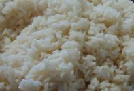
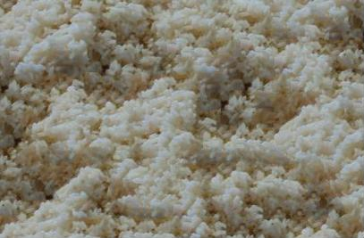
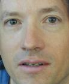
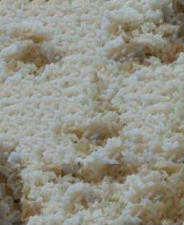
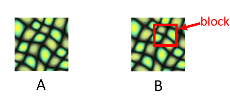
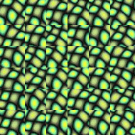
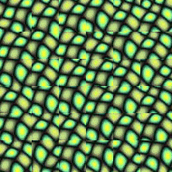
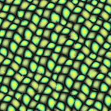
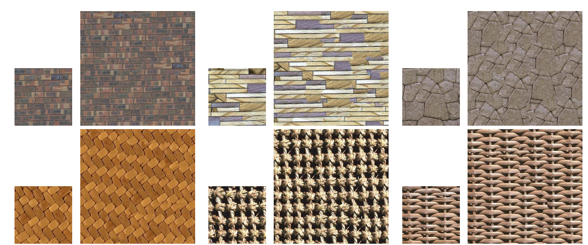
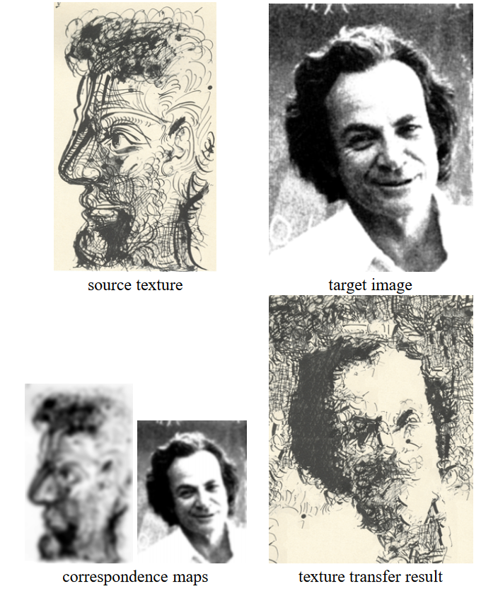

Image Quilting for Texture
Synthesis and Transfer
 
 
We are going to review the paper on Image Quilting for Texture Synthesis and Transfer by Alexei A. Efros and William T. Freeman, which was published in 2001. The code is available on GitHub
writers did two tasks:
1. Used quilting as a texture synthesis algorithm
2. Extended algorithm to perform texture transfer
What is the image quilting process?
The definition from the paper
A new image is synthesized by stitching together small patches of existing images.
To break it down simply, picture you've got a bunch of tiny images, like puzzle pieces. Now, think about making a whole new picture by sticking these little pictures together - just like how you'd piece together a puzzle. The cool part is, the new image is a mashup of parts from those original pictures, and when you look at it, you see a completely different picture formed by combining those pieces.

The first image (A) serves as our base, and we proceed by selecting and blocking portions, as demonstrated in B.
To synthesize a new texture image, we have three options:
The first option is to choose blocks randomly: in each step, we randomly select a block and combine them. While the result is acceptable to some extent, it's not entirely satisfying. Regardless of the smoothing done across the edges, there's a noticeable mismatch between most blocks.

def random_patch(self):
h, w, _ = self.texture.shape
i = np.random.randint(h - self.patch_length)
j = np.random.randint(w - self.patch_length)
return self.texture[i:i + self.patch_length, j:j + self.patch_length]
The method generates random indices 'i' and 'j' within the permissible range to extract a patch from the texture, determined by the 'patch_length' attribute.
The second approach involves selecting blocks based on their neighbors. Instead of randomly picking blocks, we opt for those that agree with some measure with their neighbors, aiming to eliminate visible boundaries. This results in an improvement, yet some edges may still be detectable.

def random_best_patch(self, res, y, x):
h, w, _ = self.texture.shape
errors = np.zeros((h - self.patch_length, w - self.patch_length))
for i in range(h - self.patch_length):
for j in range(w - self.patch_length):
patch = self.texture[i:i + self.patch_length, j:j + self.patch_length]
e = self.l2_overlap_diff(patch, res, y, x)
errors[i, j] = e
i, j = np.unravel_index(np.argmin(errors), errors.shape)
return self.texture[i:i + self.patch_length, j:j + self.patch_length]
def l2_overlap_diff(self, patch, res, y, x):
error = 0
if x > 0:
left = patch[:, :self.overlap] - res[y:y + self.patch_length, x:x + self.overlap]
error += np.sum(left ** 2)
if y > 0:
up = patch[:self.overlap, :] - res[y:y + self.overlap, x:x + self.patch_length]
error += np.sum(up ** 2)
if x > 0 and y > 0:
corner = patch[:self.overlap, :self.overlap] - res[y:y + self.overlap, x:x + self.overlap]
error -= np.sum(corner ** 2)
return error
The 'random_best_patch' method aims to select an optimal patch from a given texture, considering a ('res') and specific coordinates ('y' and 'x'). The method iterates through all possible patch locations, computes the L2 norm-based overlap difference using the 'l2_overlap_diff' method, and stores the errors in a matrix.
The third option is to identify errors in the overlap region and then determine the minimum cost path through these errors. This approach yields significantly improved results, making it challenging to easily define the edges.

def min_cut_patch(self, patch, res, y, x):
patch = patch.copy()
dy, dx, _ = patch.shape
min_cut = np.zeros_like(patch, dtype=bool)
if x > 0:
left = patch[:, :self.overlap] - res[y:y + dy, x:x + self.overlap]
left_l2 = np.sum(left ** 2, axis=2)
for i, j in enumerate(self.min_cut_path(left_l2)):
min_cut[i, :j] = True
if y > 0:
up = patch[:self.overlap, :] - res[y:y + self.overlap, x:x + dx]
up_l2 = np.sum(up ** 2, axis=2)
for j, i in enumerate(self.min_cut_path(up_l2.T)):
min_cut[:i, j] = True
np.copyto(patch, res[y:y + dy, x:x + dx], where=min_cut)
return patch
def min_cut_path(self, errors):
# Dijkstra's algorithm vertical
pq = [(error, [i]) for i, error in enumerate(errors[0])]
heapq.heapify(pq)
h, w = errors.shape
seen = set()
while pq:
error, path = heapq.heappop(pq)
cur_depth = len(path)
cur_index = path[-1]
if cur_depth == h:
return path
for delta in -1, 0, 1:
next_index = cur_index + delta
if 0 <= next_index < w:
if (cur_depth, next_index) not in seen:
cum_error = error + errors[cur_depth, next_index]
heapq.heappush(pq, (cum_error, path + [next_index]))
seen.add((cur_depth, next_index))
The 'min_cut_patch' method calculates the L2 norm-based difference in pixel values between the patch and overlapping regions in the result image, constructs a minimum cut path using the 'min_cut_path' method, and sets the corresponding elements in the 'min_cut' matrix to True. The minimum cut path is determined using Dijkstra's algorithm vertically, considering the errors in the input matrix.
How is Minimum Error Boundary working?
With dynamic algorithms like Dijkstra, we can identify the best matches by efficiently cutting between two overlapping blocks.
n the context of our puzzle analogy, the Minimum Error Boundary acts as a clever strategy for piecing together these puzzle elements. It assists in determining how to connect different pieces of the picture so that the edges blend seamlessly, eliminating any obvious seams.
The concept of a Minimal Cost Path, akin to finding the most efficient or economical route, is familiar in various applications, such as GPS navigation systems or delivery route planning. Essentially, it helps us discover the fastest and easiest way to travel from one point to another.
These are some results from the paper:

Texture Transfer
The fundamental concept is that the image quilting algorithm excels not only in creating textures but also in its potency for texture transfer. Texture transfer entails crafting a new image that honors both the attributes of a source texture and a predefined correspondence map.
During texture transfer, two main constraints are considered:
. The output must be a valid example of the source texture.
. The correspondence map must be respected, meaning the brightness or other defined features should match.

def best_corr_patch(self, y, x):
h, w, _ = self.texture.shape
errors = np.zeros((h - self.patch_length, w - self.patch_length))
corr_target_patch = self.corr_target[y:y + self.patch_length, x:x + self.patch_length]
cur_patch_height, cur_patch_width = corr_target_patch.shape
for i in range(h - self.patch_length):
for j in range(w - self.patch_length):
corr_texture_patch = self.corr_texture[i:i + cur_patch_height, j:j + cur_patch_width]
e = corr_texture_patch - corr_target_patch
errors[i, j] = np.sum(e ** 2)
i, j = np.unravel_index(np.argmin(errors), errors.shape)
return self.texture[i:i + cur_patch_height, j:j + cur_patch_width]
def best_corr_overlap_patch(self, res, y, x, alpha=0.1, level=0):
h, w, _ = self.texture.shape
errors = np.zeros((h - self.patch_length, w - self.patch_length))
corr_target_patch = self.corr_target[y:y + self.patch_length, x:x + self.patch_length]
di, dj = corr_target_patch.shape
for i in range(h - self.patch_length):
for j in range(w - self.patch_length):
patch = self.texture[i:i + di, j:j + dj]
l2error = self.l2_overlap_diff(patch, res, y, x)
overlap_error = np.sum(l2error)
corr_texture_patch = self.corr_texture[i:i + di, j:j + dj]
corr_error = np.sum((corr_texture_patch - corr_target_patch) ** 2)
prev_error = 0
if level > 0:
prev_error = patch[self.overlap:, self.overlap:] - res[y + self.overlap:y + self.patch_length,
x + self.overlap:x + self.patch_length]
prev_error = np.sum(prev_error ** 2)
errors[i, j] = alpha * (overlap_error + prev_error) + (1 - alpha) * corr_error
i, j = np.unravel_index(np.argmin(errors), errors.shape)
return self.texture[i:i + di, j:j + dj]
The 'best_corr_patch' method aims to identify the texture patch that exhibits the best correlation with a target patch, located at coordinates 'y' and 'x.' The correlation is computed based on the L2 norm of the pixel-wise differences between corresponding patches in the texture and target images. The minimum error is determined, and the corresponding patch is returned.
On the other hand, the 'best_corr_overlap_patch' method extends this functionality to include consideration of overlapping regions. This method computes an error metric that combines the L2 norm-based overlap difference and the correlation difference between the texture and target patches.
Conclusion
In this paper, the authors introduced image quilting, a technique for synthesizing a new image by seamlessly stitching together small patches from existing images. Furthermore, they extended this method to texture transfer in a broader context, showcasing very promising results.